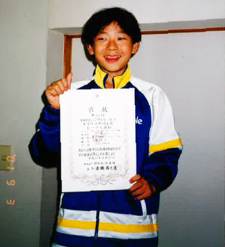
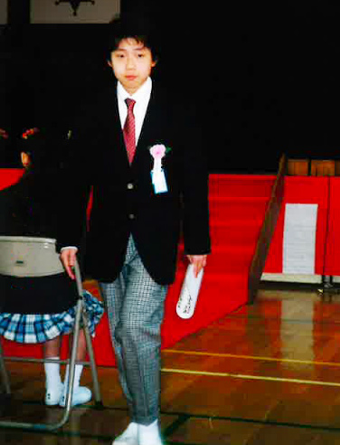
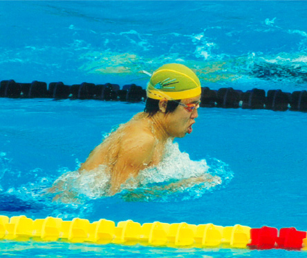
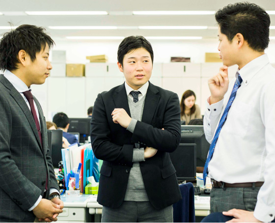

02
02
西垣文矢Nishigaki Fumiya 事業企画部 営業企画課
-
1

埼玉県で生まれる
浦和市で三男として生まれる。
「元気な子に育て」という両親の願いを
受けて、０歳からプールに入った。 -
6
小学校入学
水泳漬けの毎日。
二人の兄と共に
毎日プールで練習した。
小学校６年生の時、
全国大会で６位入賞！ -
 12
中学校入学
中学、高校時代も
地元のクラブチームで
水泳を続ける。
毎日のきつい練習に
耐え、決勝レースの
わずか１分にすべてを
注いだ。 -
 18
大学入学。水泳部に。
初めて地元のクラブを離れて
大学水泳部に入り、
４年次にはコーチ就任。
チームを率いた。 -
23
入社
ずっと泳いでいたから、
就職のことは何も考えてなかった。
社長との出会いがすべてだった。 -
 25
営業企画課
1年間、アセットプランニング部で
販売活動に従事。その後営業企画課に異動し、
マーケティング施策を担当。
F
U
T
U
R
E